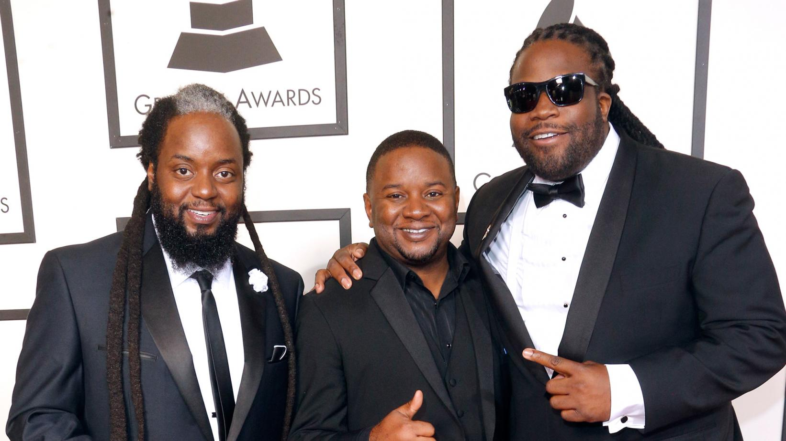
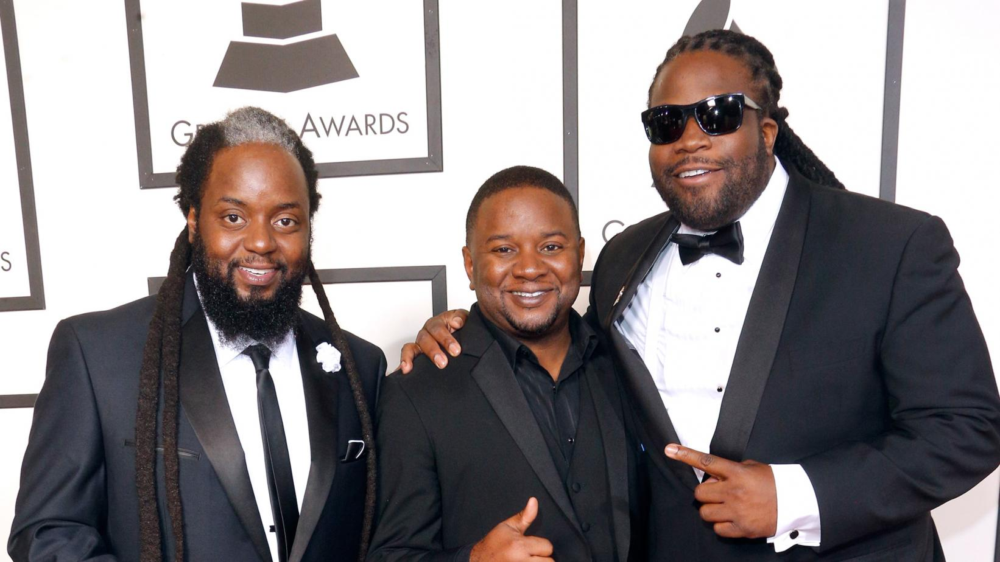
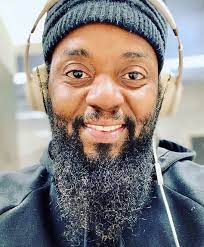
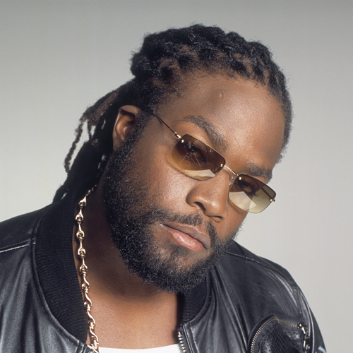
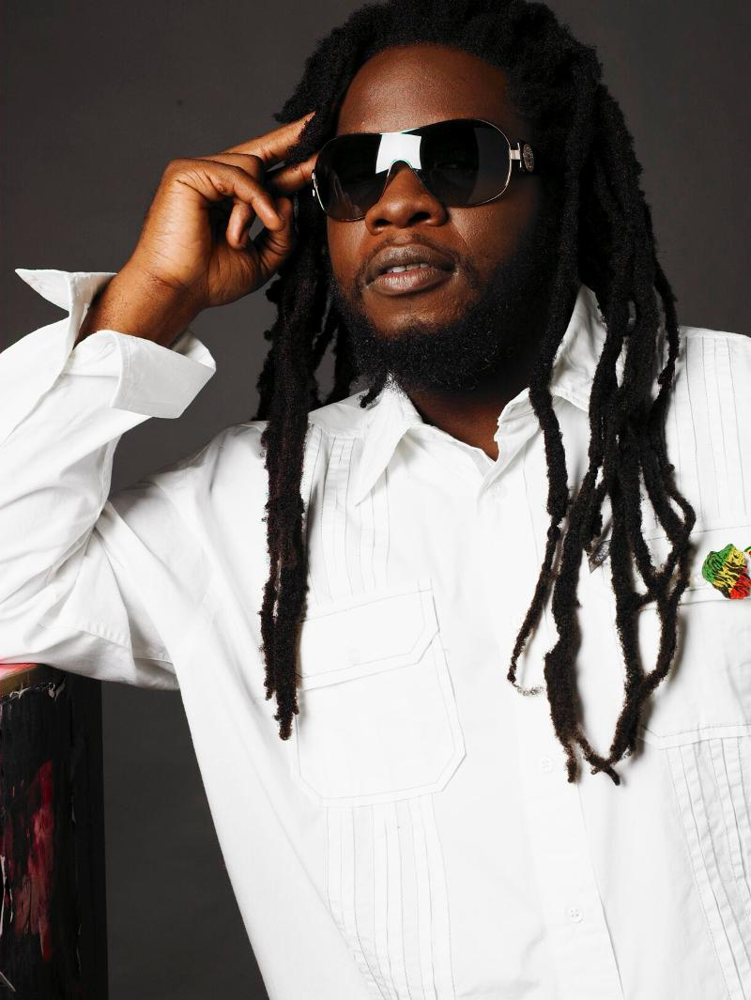

Morgan Heritage is a reggae music band that is an award winning artist, Grammy Award nominated Jamaican music band that was formed in the year 1991. The Morgan Heritage music bais a music band that was formed by five children of a Jamaican renowned and established reggae musician Denroy Morgan, and they are namely; Peetah Morgan, Roy 'Gramps'Morgan, Memmalatel 'Mr. Mojo' Morgan, Una Morgan and Nakayamah Morgan of who two members have passed namely: Una Morgan and Nakayamah Morgan.
Morgan Heritage is a band whose origin can be traced to Broklyn, New york, Shapefields, massacheusets and Jamaica. Morgan heritage started their music journey in the year 1991 but in the year 1994 their proffesional career began. They have toured worldwide and have excelled in their music career as a music band which is uncommon for most music bands producing hit songs and hit albums both locally and on international plattforms. Their first album Miracles (1994) was released in the very same year they began their proffesional debut, later produced their second album Protect Us (1997) and many more albums. In 2016 they won a Grammy Award for Best reggae Album category and have also achieved many more awards. Some members have also worked on solo projects and are quite performing beautifully as solo artists. The Morgan Heritage have produced many songs and albulms such as;
Morgan heritage for sure is my Favourite music band because one; apart from being a reggae fanatic and a lover of good legendary piece of art, Morgan Heritage songs have played a major role in my life since I listened to their songs as I grew up, and their soothing, sensational music brings back alot of childhood and teenage hood priceless memories. personally I have four favourite pieces of masterpiece this band has produced; A Man is Still a Man , Dont haffi Dread, Nothing To Smile About and lastly Tell me How Comes.
The Morgan Heritage is now comprissed of three members who are namely;

Born in 1977 Peetah Morgan is the Lead vocalist in the band, a sensational world class musician and also an award winning reggae artist. Apart from being a member of the Heritage music he has also produced a number of hit songs such as; Reggae Bring Back Love, My Makeda, Talk and Talk among others.

He is the eldest of the remaining sons of Denroy Morgan, he is the Keyboard instrumentalist in the band, a record execcutive and also a very talented and creative reggae artist. He has also produced international reggae hit songs like One in a Million, Wash The tears, The Almighty, and many others.

Mr. Mojo is the Percussion/vocalist and also a producer in the band. It goes without saying that he is the youngest of the members of the Morgan Heritage band and the lastborn in the family. He is also a very good artist following in the steps of the family like the rest. He's produced his first debut album Be Free feat Stephen Marley and Gramps Morgan.